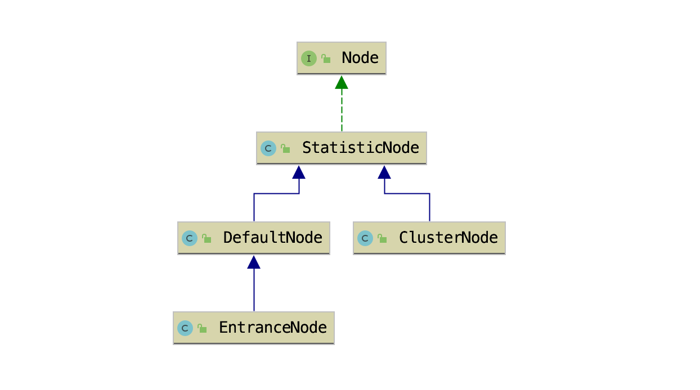

- 01 开篇词：一次服务雪崩问题排查经历.md.html
- 02 为什么需要服务降级以及常见的几种降级方式.md.html
- 03 为什么选择 Sentinel，Sentinel 与 Hystrix 的对比.md.html
- 04 Sentinel 基于滑动窗口的实时指标数据统计.md.html
- 05 Sentinel 的一些概念与核心类介绍.md.html
- 06 Sentinel 中的责任链模式与 Sentinel 的整体工作流程.md.html
- 07 Java SPI 及 SPI 在 Sentinel 中的应用.md.html
- 08 资源指标数据统计的实现全解析（上）.md.html
- 09 资源指标数据统计的实现全解析（下）.md.html
- 10 限流降级与流量效果控制器（上）.md.html
- 11 限流降级与流量效果控制器（中）.md.html
- 12 限流降级与流量效果控制器（下）.md.html
- 13 熔断降级与系统自适应限流.md.html
- 14 黑白名单限流与热点参数限流.md.html
- 15 自定义 ProcessorSlot 实现开关降级.md.html
- 16 Sentinel 动态数据源：规则动态配置.md.html
- 17 Sentinel 主流框架适配.md.html
- 18 Sentinel 集群限流的实现（上）.md.html
- 19 Sentinel 集群限流的实现（下）.md.html
- 20 结束语：Sentinel 对应用的性能影响如何？.md.html
- 21 番外篇：Sentinel 1.8.0 熔断降级新特性解读.md.html
05 Sentinel 的一些概念与核心类介绍
了解 Sentinel 的一些概念
- 资源：资源是 Sentinel 的关键概念。资源，可以是一个方法、一段代码、由应用提供的接口，或者由应用调用其它应用的接口。
- 规则：围绕资源的实时状态设定的规则，包括流量控制规则、熔断降级规则以及系统保护规则、自定义规则。
- 降级：在流量剧增的情况下，为保证系统能够正常运行，根据资源的实时状态、访问流量以及系统负载有策略的拒绝掉一部分流量。
Sentinel 资源指标数据统计相关的类
Sentinel 中指标数据统计以资源为维度。资源使用 ResourceWrapper 对象表示，我们把 ResourceWrapper 对象称为资源 ID。如果一个资源描述的是一个接口，那么资源名称通常就是接口的 url，例如“GET:/v1/demo”。
ResourceWrapper
public abstract class ResourceWrapper {
protected final String name;
protected final EntryType entryType;
protected final int resourceType;
public ResourceWrapper(String name, EntryType entryType, int resourceType) {
this.name = name;
this.entryType = entryType;
this.resourceType = resourceType;
}
}
ResourceWrapper 有三个字段：
- name 为资源名称，例如：“GET:/v1/demo”。
- entryType 为流量类型，即流入流量还是流出流量，通俗点说就是发起请求还是接收请求。
- resourceType 表示资源的类型，例如 Dubbo RPC、Web MVC 或者 API Gateway 网关。
EntryType 是一个枚举类型：
public enum EntryType {
IN("IN"),
OUT("OUT");
}
可以把 IN 和 OUT 简单理解为接收处理请求与发送请求。当接收到别的服务或者前端发来的请求，那么 entryType 为 IN；当向其他服务发起请求时，那么 entryType 就为 OUT。例如，在消费端向服务提供者发送请求，当请求失败率达到多少时触发熔断降级，那么服务消费端为实现熔断降级就需要统计资源的 OUT 类型流量。
Sentinel 目前支持的资源类型有以下几种：
public final class ResourceTypeConstants {
public static final int COMMON = 0;
public static final int COMMON_WEB = 1;
public static final int COMMON_RPC = 2;
public static final int COMMON_API_GATEWAY = 3;
public static final int COMMON_DB_SQL = 4;
}
- COMMON：默认
- COMMON_WEB：Web 应用的接口
- COMMON_RPC：Dubbo 框架的 RPC 接口
- COMMON_API_GATEWAY：用于 API Gateway 网关
- COMMON_DB_SQL：数据库 SQL 操作
Node
Node 用于持有实时统计的指标数据，Node 接口定义了一个 Node 类所需要提供的各项指标数据统计的相关功能，为外部屏蔽滑动窗口的存在。提供记录请求被拒绝、请求被放行、请求处理异常、请求处理成功的方法，以及获取当前时间窗口统计的请求总数、平均耗时等方法。Node 接口源码如下。
public interface Node extends OccupySupport, DebugSupport {
long totalRequest(); // 获取总的请求数
long totalPass(); // 获取通过的请求总数
long totalSuccess(); // 获取成功的请求总数
long blockRequest(); // 获取被 Sentinel 拒绝的请求总数
long totalException(); // 获取异常总数
double passQps(); // 通过 QPS
double blockQps(); // 拒绝 QPS
double totalQps(); // 总 qps
double successQps(); // 成功 qps
double maxSuccessQps(); // 最大成功总数 QPS（例如秒级滑动窗口的数组大小默认配置为 2，则取数组中最大）
double exceptionQps(); // 异常 QPS
double avgRt(); // 平均耗时
double minRt(); // 最小耗时
int curThreadNum(); // 当前并发占用的线程数
double previousBlockQps(); // 前一个时间窗口的被拒绝 qps
double previousPassQps(); // 前一个时间窗口的通过 qps
Map<Long, MetricNode> metrics();
List<MetricNode> rawMetricsInMin(Predicate<Long> timePredicate);
void addPassRequest(int count); // 添加通过请求数
void addRtAndSuccess(long rt, int success); // 添加成功请求数，并且添加处理成功的耗时
void increaseBlockQps(int count); // 添加被拒绝的请求数
void increaseExceptionQps(int count); // 添加异常请求数
void increaseThreadNum(); // 自增占用线程
void decreaseThreadNum(); // 自减占用线程
void reset(); // 重置滑动窗口
}
它的几个实现类：DefaultNode、ClusterNode、EntranceNode、StatisticNode 的关系如下图所示。

StatisticNode
Statistic 即统计的意思，StatisticNode 是 Node 接口的实现类，是实现实时指标数据统计 Node。
public class StatisticNode implements Node {
// 秒级滑动窗口，2 个时间窗口大小为 500 毫秒的 Bucket
private transient volatile Metric rollingCounterInSecond = new ArrayMetric(2,1000);
// 分钟级滑动窗口，60 个 Bucket 数组，每个 Bucket 统计的时间窗口大小为 1 秒
private transient Metric rollingCounterInMinute = new ArrayMetric(60, 60 * 1000, false);
// 统计并发使用的线程数
private LongAdder curThreadNum = new LongAdder();
}
如代码所示，一个 StatisticNode 包含一个秒级和一个分钟级的滑动窗口，以及并行线程数计数器。秒级滑动窗口用于统计实时的 QPS，分钟级的滑动窗口用于保存最近一分钟内的历史指标数据，并行线程计数器用于统计当前并行占用的线程数。
StatisticNode 的分钟级和秒级滑动窗口统计的指标数据分别有不同的用处。例如，StatisticNode 记录请求成功和请求执行耗时的方法中调用了两个滑动窗口的对应指标项的记录方法，代码如下：
@Override
public void addRtAndSuccess(long rt, int successCount) {
// 秒级滑动窗口
rollingCounterInSecond.addSuccess(successCount);
rollingCounterInSecond.addRT(rt);
// 分钟级滑动窗口
rollingCounterInMinute.addSuccess(successCount);
rollingCounterInMinute.addRT(rt);
}
获取前一秒被 Sentinel 拒绝的请求总数从分钟级滑动窗口获取，代码如下：
@Override
public double previousBlockQps() {
return this.rollingCounterInMinute.previousWindowBlock();
}
而获取当前一秒内已经被 Sentinel 拒绝的请求总数则从秒级滑动窗口获取，代码如下：
@Override
public double blockQps() {
return rollingCounterInSecond.block() / rollingCounterInSecond.getWindowIntervalInSec();
}
获取最小耗时也是从秒级的滑动窗口取的，代码如下：
@Override
public double minRt() {
// 秒级滑动窗口
return rollingCounterInSecond.minRt();
}
由于方法比较多，这里就不详细介绍每个方法的实现了。
StatisticNode 还负责统计并行占用的线程数，用于实现信号量隔离，按资源所能并发占用的最大线程数实现限流。当接收到一个请求就将 curThreadNum 自增 1，当处理完请求时就将 curThreadNum 自减一，如果同时处理 10 个请求，那么 curThreadNum 的值就为 10。
假设我们配置 tomcat 处理请求的线程池大小为 200，通过控制并发线程数实现信号量隔离的好处就是不让一个接口同时使用完这 200 个线程，避免因为一个接口响应慢将 200 个线程都阻塞导致应用无法处理其他请求的问题，这也是实现信号量隔离的目的。
DefaultNode
DefaultNode 是实现以资源为维度的指标数据统计的 Node，是将资源 ID 和 StatisticNode 映射到一起的 Node。
public class DefaultNode extends StatisticNode {
private ResourceWrapper id;
private volatile Set<Node> childList = new HashSet<>();
private ClusterNode clusterNode;
public DefaultNode(ResourceWrapper id, ClusterNode clusterNode) {
this.id = id;
this.clusterNode = clusterNode;
}
}
如代码所示，DefaultNode 是 StatisticNode 的子类，构造方法要求传入资源 ID，表示该 Node 用于统计哪个资源的实时指标数据，指标数据统计则由父类 StatisticNode 完成。
DefaultNode 字段说明：
- id：资源 ID，ResourceWrapper 对象。
- childList：childList 是一个 Node（DefaultNode）集合，用于存放子节点。
- clusterNode：clusterNode 字段是一个 ClusterNode，ClusterNode 也是 StatisticNode 的子类。
我们回顾下 Sentinel 的基本使用：
ContextUtil.enter("上下文名称，例如：sentinel_spring_web_context");
Entry entry = null;
try {
entry = SphU.entry("资源名称，例如：/rpc/openfein/demo", EntryType.IN (或者 EntryType.OUT));
// 执行业务方法
return doBusiness();
} catch (Exception e) {
if (!(e instanceof BlockException)) {
Tracer.trace(e);
}
throw e;
} finally {
if (entry != null) {
entry.exit(1);
}
ContextUtil.exit();
}
如上代码所示，doBusiness 业务方法被 Sentinel 保护，当 doBusiness 方法被多层保护时，就可能对同一个资源创建多个 DefaultNode。一个资源理论上可能有多个 DefaultNode，是否有多个 DefaultNode 取决于是否存在多个 Context，即当前调用链路上是否多次调用 ContextUtil#enter 方法，是否每次调用 ContextUtil#enter 方法都会创建一个 Context。
特别加上“理论上”，是因为在一个线程中，调用多次 ContextUtil#enter 方法，只有第一次调用会创建 Context，ContextUtil 使用 ThreadLocal 存储 Context，所以后续的调用都会使用之前创建的 Context，而 DefaultNode 是在 NodeSelectorSlot 中创建的，使用 Map 缓存，key 为 Context#name，所以在使用同一个 Context 的情况下，只会为一个资源创建一个 DefaultNode。这部分内容在介绍 NodeSelectorSlot 时再作详细介绍。
ClusterNode
Sentinel 使用 ClusterNode 统计每个资源全局的指标数据，以及统计该资源按调用来源区分的指标数据。全局数据指的是不区分调用链路，一个资源 ID 只对应一个 ClusterNode。
public class ClusterNode extends StatisticNode {
// 资源名称
private final String name;
// 资源类型
private final int resourceType;
// 来源指标数据统计
private Map<String, StatisticNode> originCountMap = new HashMap<>();
// 控制并发修改 originCountMap 用的锁
private final ReentrantLock lock = new ReentrantLock();
public ClusterNode(String name, int resourceType) {
this.name = name;
this.resourceType = resourceType;
}
}
ClusterNode 字段说明：
- name：资源名称。很奇怪，这里没有使用 ResourceWrapper，是版本历史问题，还是因为 ClusterNode 不需要判断流量类型。
- resourceType：资源类型。
- originCountMap：维护每个调用来源的指标数据统计数据（StatisticNode），其用途是什么，在使用到时再做分析。
EntranceNode
EntranceNode 是一个特殊的 Node，它继承 DefaultNode，用于维护一颗树，从根节点到每个叶子节点都是不同请求的调用链路，所经过的每个节点都对应着调用链路上被 Sentinel 保护的资源，一个请求调用链路上的节点顺序正是资源被访问的顺序。
public class EntranceNode extends DefaultNode {
public EntranceNode(ResourceWrapper id, ClusterNode clusterNode) {
super(id, clusterNode);
}
}
在一个 Web MVC 应用中，每个接口就是一个资源，Sentinel 通过 Spring MVC 拦截器拦截每个接口的入口，统一创建名为“sentinel_spring_web_context”的 Context，名称相同的 Context 都使用同一个 EntranceNode。一个 Web 应用可能有多个接口，而 childList 就用于存储每个接口对应的 DefaultNode。
如果想统计一个应用的所有接口（不一定是所有，没有被调用过的接口不会创建对应的 DefaultNode）总的 QPS，只需要调用 EntranceNode 的 totalQps 就能获取到。EntranceNode 的 totalQps 方法代码如下：
@Override
public double totalQps() {
double r = 0;
// 遍历 childList
for (Node node : getChildList()) {
r += node.totalQps();
}
return r;
}
EntranceNode、DefaultNode、ClusterNode 与滑动窗口的关系如下图所示：
Sentinel 中的 Context 与 Entry
理解 Context 与 Entry 也是理解 Sentinel 整个工作流程的关键，其中 Entry 还会涉及到“调用树”这一概念。
Context
Context 代表调用链路上下文，贯穿一次调用链路中的所有 Entry。Context 维持着入口节点（entranceNode）、本次调用链路的 curNode、调用来源（origin）等信息。Context 名称即为调用链路入口名称。
Context 通过 ThreadLocal 传递，只在调用链路的入口处创建。
假设服务B提供一个查询天气预报的接口给服务A调用，服务B实现查询天气预报的接口是调用第三方服务C实现的，服务B是一个 MVC 应用，同时服务B调用服务 C 接口使用 OpenFeign 实现 RPC 调用。那么，服务 B 即使用了 Sentinel 的 MVC 适配模块，也使用了 Sentinel 的 OpenFeign 适配模块。
当服务 B 接收到服务 A 请求时，会创建一个名为“sentinel_spring_web_context”的 Context，服务 B 在向服务 C 发起接口调用时由于当前线程已经存在一个 Context，所以还是用“sentinel_spring_web_context”这个 Context，代表是同一个调用链路入口。
举个不恰当的例子：
- 路径一：A.a()-> 调用 -> B.b()-> 调用 C.c()，A.a() 为该调用链路的入口，入口名称为“a_context”。
- 路径二：D.d()-> 调用 -> B.b()-> 调用 C.c()，D.d() 为该调用链路的入口，入口名称为“d_context”。
那么，每次调用 A.a() 方法都会创建名为“a_context”的 Context，每次调用 B.b() 方法都会创建名为“b_context”的 Context。如果 A.a() 同时有 20 个请求，那么就会创建 20 个名为“a_context”的 Context，Context 代表了这 20 个请求每个请求的调用链路上下文，而路径一就是这 20 个请求相同的调用链路。
Context 的字段定义如下：
public class Context {
private final String name;
private DefaultNode entranceNode;
private Entry curEntry;
private String origin = "";
// 我们不讨论异步的情况
// private final boolean async;
}
- name：Context 的名称。
- entranceNode：当前调用树的入口节点，类型为 EntranceNode。同一个入口的资源，每个资源对应一个 DefaultNode，entranceNode#childList 用于存储这些资源的 DefaultNode。
- curEntry：当前 Entry（CtEntry）。
- origin：调用来源的名称，即服务消费者的名称或者服务消费者的来源 IP，取决于服务消费者是否使用 Sentinel，由 Sentinel 适配层传递过来。例如：服务提供者是 Spring MVC 应用，且服务提供者使用 Sentinel 的 Web MVC 适配，那么 Sentinel 会尝试从请求头获取"S-user"，如果服务消费者有在请求头传递这个参数，那么就能够获取到。
Entry（CtEntry）
在调用 Context#getCurNode 方法获取调用链路上当前访问到的资源的 DefaultNode 时，实际是从 Context#curEntry 获取的，Entry 维护了当前资源的 DefaultNode，以及调用来源的 StatisticNode。Entry 抽象类字段的定义如下。
public abstract class Entry implements AutoCloseable {
private static final Object[] OBJECTS0 = new Object[0];
private long createTime;
// 当前节点（DefaultNode）
private Node curNode;
// 来源节点
private Node originNode;
private Throwable error;
// 资源
protected ResourceWrapper resourceWrapper;
}
CtEntry 是 Entry 的直接子类，后面分析源码时，我们所说 Entry 皆指 CtEntry。CtEntry 中声明的字段信息如下代码所示。
class CtEntry extends Entry {
// 当前 Entry 指向的父 Entry
protected Entry parent = null;
// 父 Entry 指向当前 Entry
protected Entry child = null;
// 当前资源的 ProcessorSlotChain
protected ProcessorSlot<Object> chain;
// 当前上下文
protected Context context;
}
CtEntry 用于维护父子 Entry，每一次调用 SphU#entry 方法都会创建一个 CtEntry。如果服务 B 在处理一个请求的路径上会多次调用 SphU#entry，那么这些 CtEntry 会构成一个双向链表。在每次创建 CtEntry，都会将 Context.curEntry 设置为这个新的 CtEntry，双向链表的作用就是在调用 CtEntry#exit 方法时，能够将 Context.curEntry 还原为上一个资源的 CtEntry。
例如，在服务 B 接收到服务 A 的请求时，会调用 SphU#entry 方法创建一个 CtEntry，我们取个代号 ctEntry1，此时的 ctEntry1 的父节点（parent）为空。当服务 B 向服务 C 发起调用时，OpenFeign 适配器调用 SphU#entry 的方法会创建一个 CtEntry，我们取个代号 ctEntry2，此时 ctEntry2 的父节点（parent）就是 ctEntry1，ctEntry1 的子节点（child）就是 ctEntry2，如下图所示。
ROOT 与调用树
Constants 常量类用于声明全局静态常量，Constants 有一个 ROOT 静态字段，类型为 EntranceNode。
在调用 ContextUtil#enter 方法时，如果还没有为当前入口创建 EntranceNode，则会为当前入口创建 EntranceNode，将其赋值给 Context.entranceNode，同时也会将这个 EntranceNode 添加到 Constants.ROOT 的子节点（childList）。资源对应的 DefaultNode 则是在 NodeSelectorSlot 中创建，并赋值给 Context.curEntry.curNode。
Constants.ROOT、Context.entranceNode 与 Entry.curNode 三者关系如下图所示。
Sentinel 中的 ProcessorSlot
ProcessorSlot 直译就是处理器插槽，是 Sentinel 实现限流降级、熔断降级、系统自适应降级等功能的切入点。Sentinel 提供的 ProcessorSlot 可以分为两类，一类是辅助完成资源指标数据统计的切入点，一类是实现降级功能的切入点。
辅助资源指标数据统计的 ProcessorSlot：
- NodeSelectorSlot：为当前资源创建 DefaultNode，并且将 DefaultNode 赋值给 Context.curEntry.curNode(见倒数第二张图)；如果当前调用链路上只出现过一次 SphU#entry 的情况，将该 DefaultNode 添加到的 Context.entranceNode 的子节点（如倒数第一张图所示，名为 sentinel_spring_web_context 的 EntranceNode），否则添加到 Context.curEntry.parent 的子节点（childList）。有点抽象，我们在分析 NodeSelectorSlot 源码时再详细介绍。
- ClusterBuilderSlot：如果当前资源未创建 ClusterNode，则为资源创建 ClusterNode；将 ClusterNode 赋值给当前资源的 DefaultNode.clusterNode；如果调用来源（origin）不为空，则为调用来源创建 StatisticNode，用于实现按调用来源统计资源的指标数据，ClusterNode 持有每个调用来源的 StatisticNode。
- StatisticSlot：这是 Sentinel 最为重要的类之一，用于实现指标数据统计。先是调用后续的 ProcessorSlot#entry 判断是否放行请求，再根据判断结果进行相应的指标数据统计操作。
实现降级功能的 ProcessorSlot：
- AuthoritySlot：实现黑白名单降级
- SystemSlot：实现系统自适应降级
- FlowSlot：实现限流降级
- DegradeSlot：实现熔断降级
关于每个 ProcessorSlot 实现的功能，将在后续文章详细分析。
参考文献：